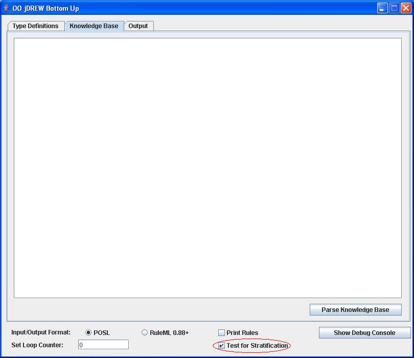
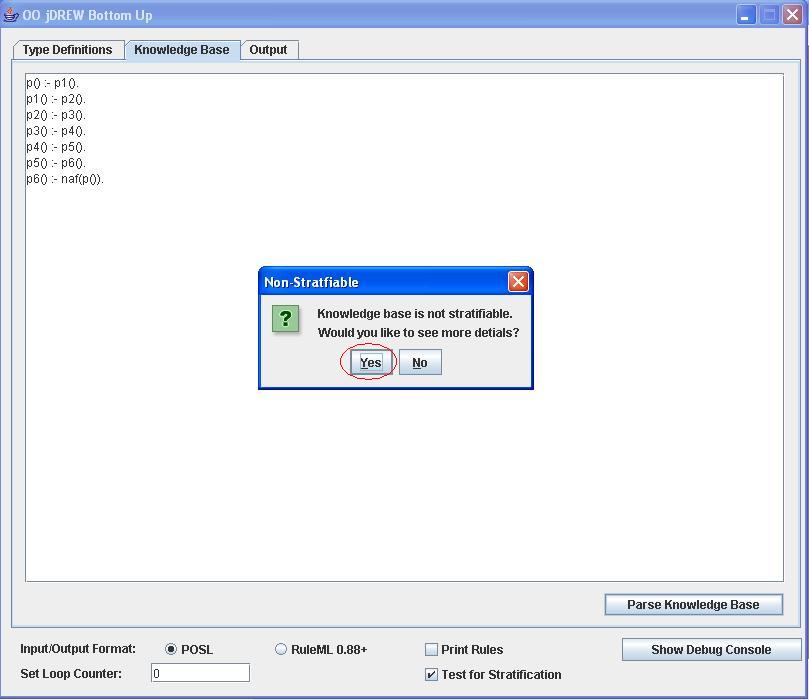
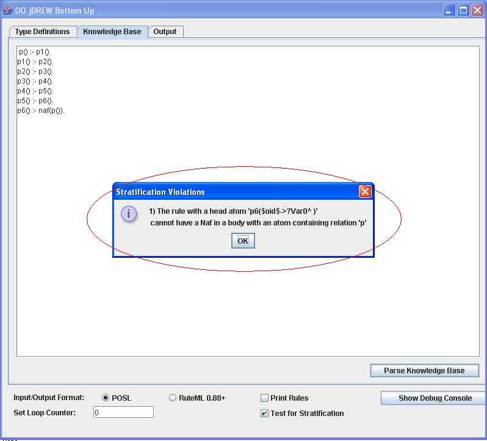
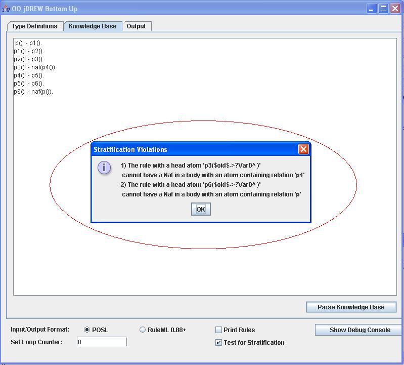
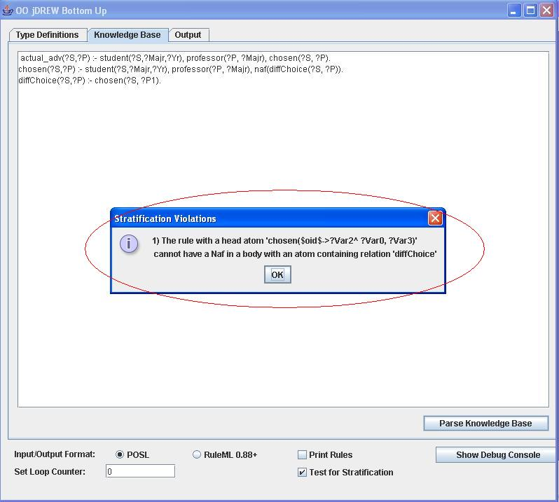
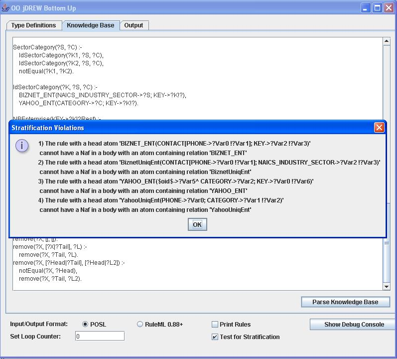

| > Home |
| > Documentation |
| > Downloads |
| > Online Demo |
| > Contact |
Testing for Stratification
A knowledge base is stratified if and only if there is no naf through recursion.
To test for stratification make sure to check the box that says "Test for Stratification" :

Simple Example
p() :- p1().p1() :- p2().
p2() :- p3().
p3() :- p4().
p4() :- p5().
p5() :- p6().
p6() :- naf(p()).
This knowledge base is clearly not stratifiable. To see more details on why stratification fails click (Yes) in the popup box after you parse, the knowledge base:

After you clicked yes, a popup box will appear to explain in more details why stratification failed:

Modified Simple Example
p() :- p1().p1() :- p2().
p2() :- p3().
p3() :- naf(p4()).
p4() :- p5().
p5() :- p6().
p6() :- naf(p()).
If there are multiple reasons why stratification fails, they will all be displayed:

Example with Body Terms
actual_adv(?S,?P) :- student(?S,?Majr,?Yr), professor(?P, ?Majr), chosen(?S, ?P).chosen(?S,?P) :- student(?S,?Majr,?Yr), professor(?P, ?Majr), naf(diffChoice(?S, ?P)).
diffChoice(?S,?P) :- chosen(?S, ?P1).
This example shows how rules with body terms will be displayed during stratification violations:

Example using NBBizKB use case
Here is a link to the NBBizKB rules in POSL format.This is not stratifiable for four reasons:

Last Updated:
July 25, 2006
By:
Ben Craig